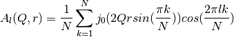

This fitting function models the inelastic part of the dynamics structure factor of a particle undergoing discrete jumps on N-sites evenly distributed in a circle. The particle can only jump to neighboring sites. This is the most common type of discrete rotational diffusion in a circle.



with h = 4.135665616 meV ps.
This function makes up the inelastic part of DiffRotDiscreteCircle.
| Name | Type | Default | Description |
|---|---|---|---|
| N | |||
| Q | |||
| WorkspaceIndex |
 (integer, default=3) number of sites -
(integer, default=3) number of sites -
 (double, default=0.5) Momentum transfer -
(double, default=0.5) Momentum transfer -
 (integer, default=0)
(integer, default=0)
| Name | Default | Description |
|---|---|---|
| Intensity | 1.0 | scaling factor [no units] |
| Radius | 1.0 | Circle radius [Angstroms] |
| Decay | 1.0 | Inverse of transition rate, in nanoseconds if energy in micro-ev, or picoseconds if energy in mili-eV |
| Shift | 0.0 | Shift in the centre of the peak |
Categories: FitFunctions | QuasiElastic
C++ header: InelasticDiffRotDiscreteCircle.h (last modified: 2020-04-07)
C++ source: InelasticDiffRotDiscreteCircle.cpp (last modified: 2020-04-07)